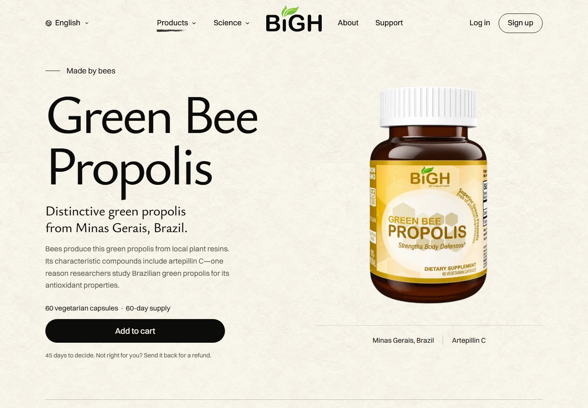
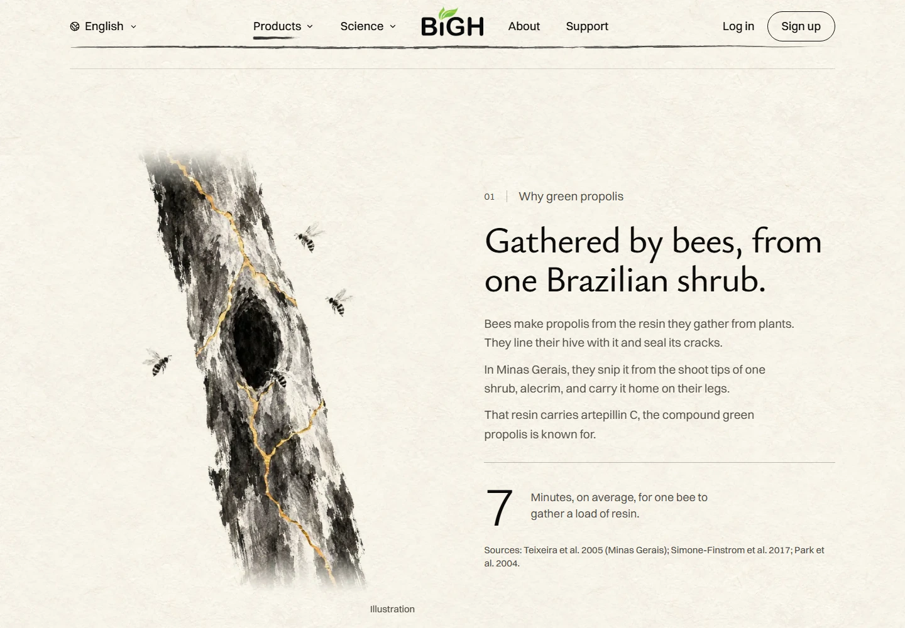
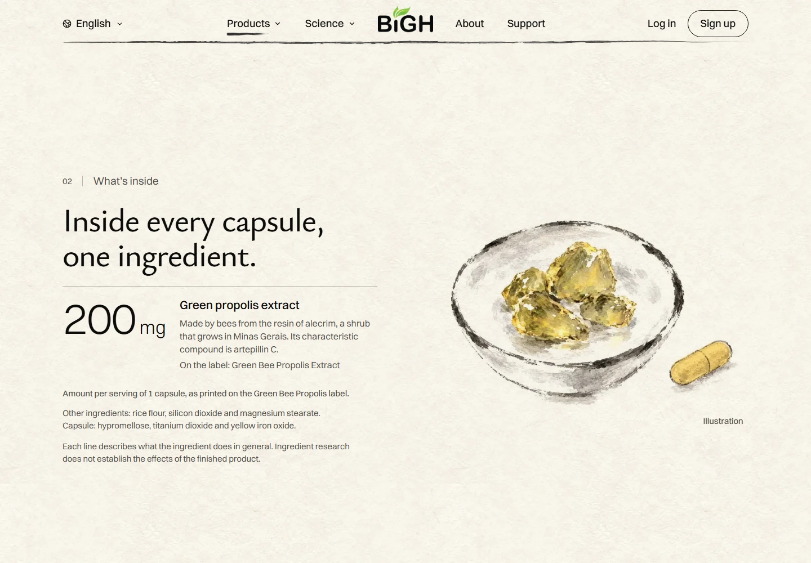
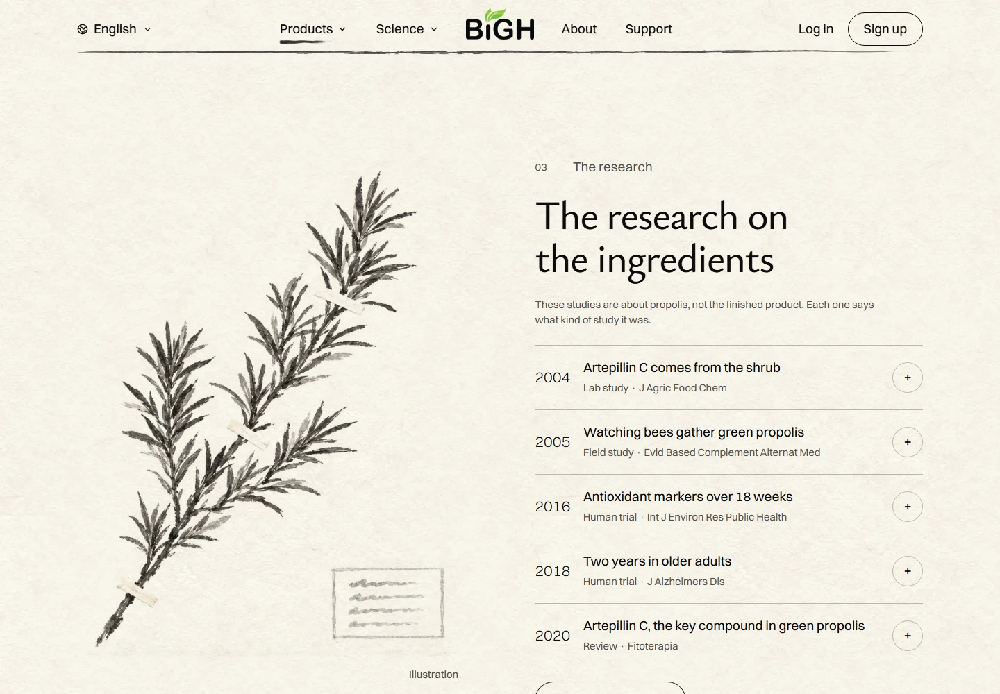
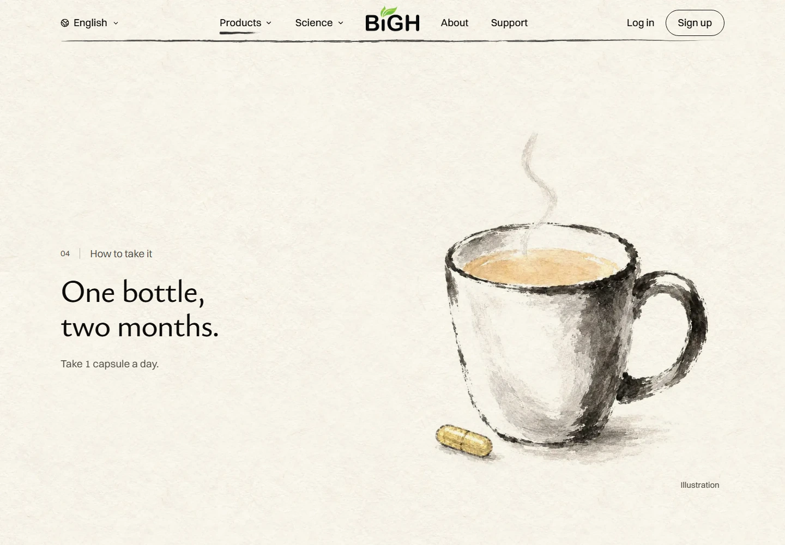
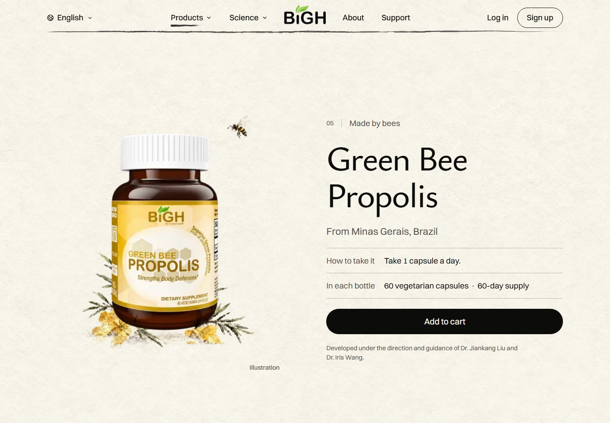
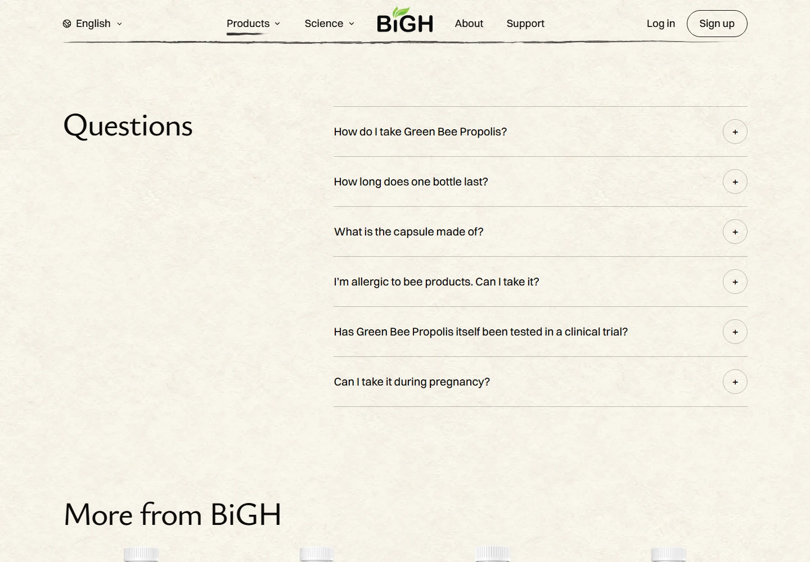
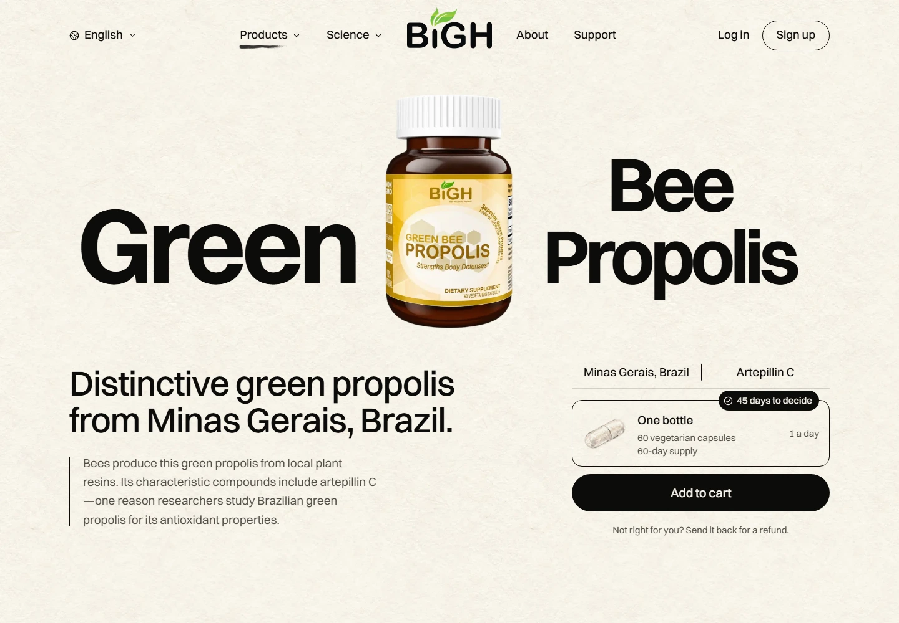
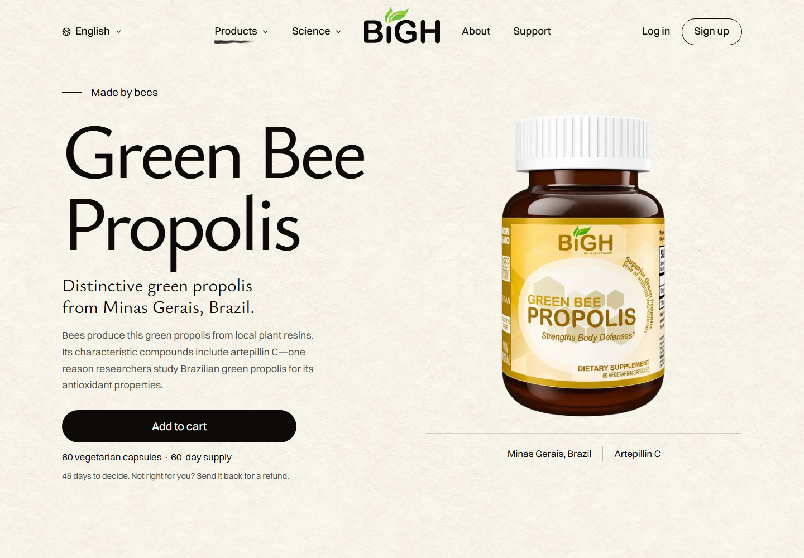
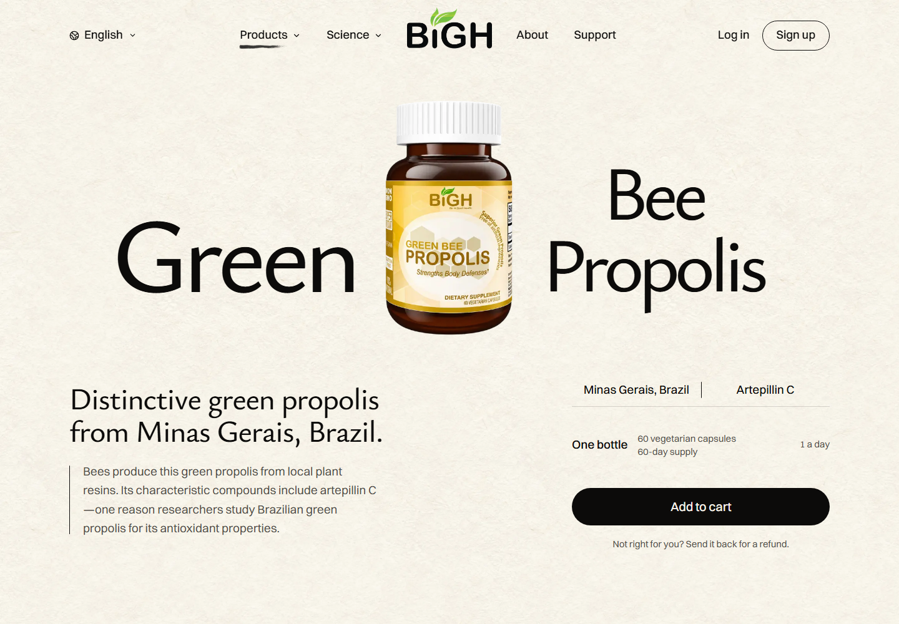

Green Bee Propolis,
with room to breathe.
Lighter titles. A clearer product opening. Alternating paintings and words. The approved bottle, product facts and gold-filled bee tree stay intact.
Design assessment: 9/10.
The remaining limit is the dense research copy on small screens. The study details open only when wanted.
The opening



The origin — gold flowing through the tree



The extract



The research



The daily ritual



The bottle



The questions



Before

The two starting concepts




These are screenshots of the local build. The public demo has not been updated.